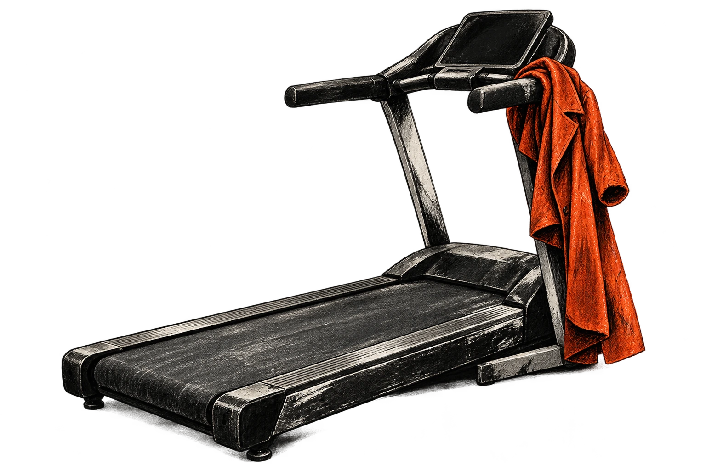
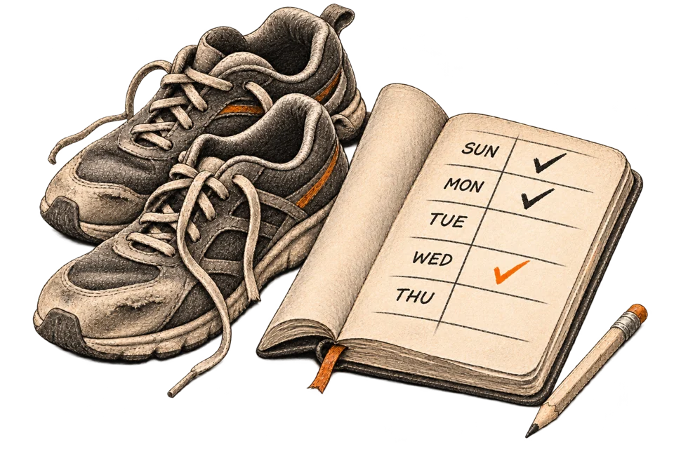
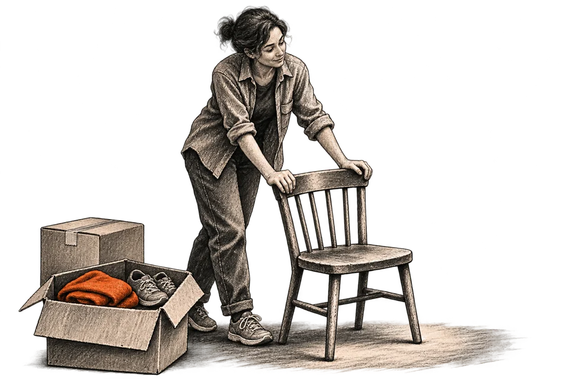

What happens when the routine breaks?
You make the plan on a good evening.
There's time. There's energy. Exercise fits neatly into the week, maybe even into every day. The future looks suspiciously cooperative.
Then work gets busy. You sleep badly. You move. Or, on an ordinary Tuesday, you simply don't feel like doing it.
Now the plan needs a replacement human.
The equipment stays: dumbbells under the bed, a gym membership collecting payments, a treadmill slowly becoming a coat rack. It was bought for the person who was going to start tomorrow. That person had time. That person apparently enjoyed Bulgarian split squats.

CONTENTS
Respond to this passage ↗I used to think that was the deal. Want to stay fit? Become disciplined. If you can't, get comfortable in the chair.
But I am going to be tired again. My work will change. So will the place I live and, eventually, what my body can do. I want to be reasonably strong and able to move through all of that. I have no particular desire to become an athlete.
What can I still do when the schedule breaks, motivation disappears, or the place I live changes?
Buying another object for tomorrow's person seems unlikely to settle this.
Somewhere to run
A treadmill gives you somewhere to run. If bad weather or the trip to the gym is what stops you, that may be exactly what you need.
But suppose you already have somewhere to run. You just don't run.
We buy the things around the action. A machine. A membership. A watch that keeps a detailed record of all the time we spent sitting. Then nothing happens, and we blame the person who bought it.
The gym asks for quite a lot before you lift anything. Get there, change, pick a program, figure out the equipment. Sometimes stand around feeling that everyone else knows what they're doing and you arrived without the instructions. If you go with a friend, you may discover how much of the arrangement belonged to the friend when they stop coming.
Studies of people with overweight or obesity repeatedly find barriers such as time, low motivation, fear of injury and discomfort about being seen exercising.1 “Try being a better person” doesn't tell me which of those problems I'm supposed to solve.
So I'd like to try a smaller change. Keep the person. Make it easier to do something useful with whatever willingness happens to turn up.
Laziness has been invited. Let's see whether anything still gets done.
I was carrying them anyway
On one grocery trip, I chose a store farther away than the nearest one because I wanted a walk. I bought enough for the week and came out with two fairly heavy bags.
On the way home I started using them as weights. A few sets for my arms. By the time I got back, my arms felt as though they'd had a small workout.
They were lousy dumbbells: unknown weight, awkward handles, bags that could split. This isn't a routine to copy. But a moment earlier they had only been groceries. Now I could also see two heavy objects I was carrying for several blocks anyway.

Learning a few movements can do that to a room. A sturdy chair can help you balance or give you a higher surface for an easier push-up. The floor becomes more useful once you know what to do on it.
The room hasn't changed. The actions I can see in it have.
Psychologists call possibilities for action affordances. What you can do depends on the surroundings and on you: your size, strength, skills, what you have learned to notice.2 A staircase doesn't offer the same thing to every body.
And looking is only part of the learning. In one small experiment, people who first tried to pass through openings of different widths later judged whether they could fit more accurately than people who made their judgments before trying.3
I like that. At some point you have to stop observing, do something, and let the world answer. You might discover a movement you can use. You might discover that the chair shifts under your weight and should be left out of the experiment.
“There's nothing to do here” can mean the place really offers very little. It can also mean I don't know enough things to do with what's there. Learning one suitable movement gives me another option without changing my address.
I can change the circumstances a little, too. Choosing the farther store had already made room for a walk. Sometimes there's a way to add a loop to an ordinary trip. Sometimes buying equipment really does remove the obstacle. The question is what was stopping the action, and whether the change helps it happen.
This is close to what I like in Taleb's idea of optionality: leave yourself some useful choices and take one when it becomes worth taking.4 I don't owe the stairs a visit every time I see them. A chance I can never refuse has become another appointment.
The habit I'm after is learning to notice more things I could do, and sometimes arranging for a good option to exist. That seems more useful to carry around than one perfect workout.
Does any of this count?
I live on the eighth floor. There's an elevator, which I fully support. I have no plans to carry a refrigerator upstairs for the training effect.
Sometimes I'm in a good mood and not in a hurry, so I take the stairs. If that happens twice in a day, I'm happy to count it. Tomorrow I may take the elevator.
It looks embarrassingly unserious if the only options in your head are an hour of exercise and nothing. Lose the hour, and seven available minutes somehow disappear with it.
Research gives us reasons to keep those minutes.
Exercise snacks are short bouts spread through the day. A 2026 review of randomized trials found moderately certain evidence that they improved aerobic fitness in inactive adults. The bouts lasted no more than five minutes, but people repeated them several days a week, over weeks. The evidence did not establish improvements in a range of other health measures.5
There are experiments with actual stairs, too. In one small trial, people did three hard, thirty-second climbs, separated by over an hour, on three days each week. Their aerobic fitness improved after six weeks.20 My eighth floor is not that experiment. Taking the stairs when I feel like it is not the same as signing up for repeated, all-out climbs.
Bodyweight can provide real strength work, too. In a small eight-week trial, push-ups adjusted to a comparable load produced gains in strength and muscle size similar to light bench presses.6 There are also studies in trained men where one demanding set per exercise, repeated through the week, produced measurable strength gains.7
I don't have to wait for an equipment delivery or a free hour to begin. A small amount of work can be worth doing even when it falls short of what would produce the biggest improvement.
The American College of Sports Medicine's 2026 review reaches a fairly unglamorous conclusion: strength training helps, elaborate programming isn't required, and the work should develop as you become able to do more.8
Can I get huge and remain a lazy ass?
No. I can stop treating “less than an athlete would do” as “pointless.”
There are encouraging observations outside training programs as well. In a large study of people who reported no leisure-time exercise, brief vigorous efforts during everyday life were associated with lower mortality. Other studies found similarly favorable health outcomes among active people who concentrated much of their weekly activity into one or two days and those who spread it out.910
These studies watched people's lives; they didn't randomly assign them years of stairs or different weekends. Healthier people may also be better able to move. I can't take the numbers and promise myself a longer life for carrying the shopping.
What I can take is room to organize the work differently. The body doesn't need a booking confirmation from the gym. It does need the work.
The version of this idea I'd love to believe
Today I want to move mountains. Tomorrow I want to lie down under one and have nobody call me.
I can't make those urges arrive on schedule. But why discard today's willingness just because tomorrow's is unreliable? If a familiar exercise or a walk is easy to start, I can use the moment while it's here.
Now the pleasant version almost writes itself. No timetable. No guilt. I wander through life picking up bits of exercise when they suit me, and somehow remain fit.
What if I simply don't feel like it for weeks?
Or I keep choosing push-ups because I like them, while my legs mainly deliver the rest of me to the fridge?
Nothing in the research above rescues me from that. Those short workouts kept happening. The people with untidy exercise weeks still accumulated substantial activity. I've found evidence that small doses can work, then quietly helped myself to the idea that my impulses will supply enough of them.
A study published this year gave people a goal of just three minutes a day. Lovely. Except they also had two twenty-minute sessions each week. Over three weeks, that group reported more total exercise than a group assigned two half-hour sessions a week.21 Small, easy-to-start goals may help. That doesn't mean an occasional good mood will supply the rest of the work.
That's the bit I haven't earned.
I even have a convenient supporting story. I've seen people who practically lived in the gym, then had bad shoulders, knees or backs, or gained weight after they stopped. How easy to remember those people and conclude that I was wiser all along with my staircase.
I saw them. So what?
I don't know what caused their problems, and I haven't counted everyone who trained for years and did well. A handful of people who suit my argument is a poor excuse to dismiss the benefits of regular activity.11
If someone loves the gym and keeps going, they have something I need to take seriously: the exercise actually happens. My more interesting explanation doesn't beat that.
And choosing for myself doesn't mean enjoying every moment. I can choose a routine because I care about what it gives me, including on days when I'd rather stay home. That's compatible with the research on autonomous motivation.12
So “whatever I feel like” needs a limit.
For scale, the usual public-health recommendations for adults start at 150 minutes of moderate aerobic activity a week, or 75 vigorous minutes, plus strength work on at least two days. Smaller amounts can still help, but that's quite a distance from occasionally remembering I have legs.13
If an important kind of activity keeps disappearing, I have to bring it back. Arrange a time. Learn a more workable version. Use the gym if that solves it. At that point, waiting for a better mood has become part of the problem.
I'm willing to give up the pleasant idea that I can do this entirely by feel. I still want to find out how much freedom remains once I take the missing work seriously.
Missing Tuesday
There is another way to make the work disappear: decide that the available version no longer counts.
Suppose I meant to exercise for an hour. The day changes and I have ten minutes. I could do something, but it wouldn't be the session I planned. So I wait for a better day.
People in a small focus-group study described this sort of all-or-nothing thinking: when the ideal workout couldn't happen, a reduced version failed to qualify.14 I recognize the trap in the rule itself. I've made the perfect session and the possible session compete, and awarded the time to neither.
“Always” is especially awkward. I exercise every day. I never miss. Then I miss, and suddenly I need to decide whether the whole thing is over.
The previous workouts still happened.


A streak might help me get going. I want a way to continue after it ends, too. Otherwise the record is starting to decide what the next day is for.
There is a useful experiment here. Researchers paid employees to visit a workplace gym, either inside a chosen two-hour window or at any time on a weekday. The flexible incentives produced more visits during the four-week intervention and for some weeks after it. By the later follow-up, the difference between the groups was no longer statistically clear. Both groups had made plans. The difference was whether going at another time still earned the payment.15
I take that as a reason to leave room in a plan. It doesn't tell me to throw the plan away.
More often is a word I can do something with. More often I take a chance to move. More often I eat decent food instead of junk. A bad choice can remain one bad choice, without being promoted to a decision about the rest of my life.
I can eat the cake. I don't then owe twelve flights of stairs.
But “more often” has to mean something happened more often. It can't just be a kinder description of the same empty week.
For now, I have three rules to work with:
- If there's a safe, easy chance to move and I want to, take it. I can pass up the next one. An unplanned walk is allowed to be useful.
- If an important kind of activity has been missing, put it back. Walking doesn't let me forget strength work. Push-ups don't cover my whole body. I need to look at what I'm actually doing.
- Let my current ability limit the effort. Wanting to do something doesn't tell me how much I can handle today.
That last rule matters when enthusiasm returns. After a long inactive spell, suddenly feeling energetic is a reason to begin gently and build up. It doesn't qualify me for an all-out sprint.11 Even strength work can help without taking every set to the point where another proper repetition is impossible.16
I try to keep three things in view: how unfamiliar the movement is, how close to my limit I'm working, and how much I'm doing. Turning all three up at once seems a bad way to find out what my body can take. That's my rule of thumb, not a formula that makes an exercise safe.17
These rules don't give me a workout for Tuesday. They give me something to decide with when Tuesday has changed. They may lead to a regular appointment. They may lead to a few different things scattered through the week. Either way, I have to see whether the activity continues.
What comes with me?
I don't need to know my workout for November 14, 2037. I would like to still be moving then.
The gym might close. A friend might stop going. I may live in another country, with different working hours and a body that no longer does everything this one can do.
Some of what I call my discipline may belong to the circumstances. Research on people changing universities found that habits were more likely to survive when relevant parts of their setting survived too.18 Losing the setting can mean having to work out how to do the thing again.
And exercise isn't exempt. In a survey of people who had been active before the COVID lockdowns, more disruption to the familiar cues around exercise was linked to bigger reported drops in activity.22 That's not a trial of how to rebuild a habit. It does suggest that a familiar time, place or person can be doing more of the work than we notice.
And here my staircase idea has its own problem. The staircase won't necessarily come with me either.
What I want to take is the ability to learn another way. In a new place, I may know very little about what will work. I can try a route, find out it's impractical, learn a movement, discover I need help. Some attempts will give me less exercise than I'd hoped. They may still tell me what to try next.
That's why the grocery bags matter to me more than a clever exercise hack. I already had a use for them. Then I found another. I had also made part of the opportunity myself, just by choosing where to shop.
I want to become better at that, and keep checking whether it gets me moving. A way of coping with change ought to be judged after something changes.


Why did we decide this was about exercise?
A few early readers asked me that. Fair question.
Start writing. Learn a language. Eat properly. Get organized, build the system, become the person who does these things.
Preferably tomorrow.
Today is an awkward place to begin. It contains the unfinished work, the tired person and the room as it actually is. Tomorrow has none of those defects yet.
If I'm always about to start living tomorrow, I'm a little dead today. And tomorrow I can do it again.
I used to read quite a lot about Daoism. Somewhere in all this I recognize something of wu wei, often translated as “non-action.” It is not simply doing nothing. What stays with me is the attempt to act without constantly forcing things into an arrangement they resist.19
The groceries still have to get home. The arms still have to work. If something is missing, I have to deal with it. But I can look at the situation before deciding that the only useful move must also be a battle with myself.
How much of the effort is the work itself? How much is holding together the particular way I've decided the work must happen?
I don't know where that distinction will help next. Some things need an appointment and a stubborn person who keeps it. Other things might become possible if I stop insisting on one route. I'd like to find out which is which before I spend another year preparing to begin.
Is there a way through?
Notes and sources
-
Baillot et al. (2021), physical activity motives, barriers and preferences in people with obesity; Hamer et al. (2021), fear-related barriers among adults with overweight and obesity. These reviews concern the populations named, not a survey of everyone's reasons for inactivity. ↩
-
Vauclin et al. (2023), perception of affordances for the person-plus-object system. The review covers 71 studies of detecting relevant information and calibrating action possibilities. ↩
-
Franchak, van der Zalm and Adolph (2010), Learning by doing: Action performance facilitates affordance perception. A small laboratory study of judgments about passing through openings. It does not test a general ability to find opportunities in life. ↩
-
Nassim Nicholas Taleb, Antifragile (2012), especially optionality and the rational flâneur. Author's bibliography. This is a conceptual debt. Whether variation itself improves an exercise strategy is a separate empirical question. ↩
-
Rodríguez et al. (2026), systematic review and meta-analysis of exercise snacks: 11 randomized trials, 414 participants. Included bouts were ≤5 minutes, at least twice daily; interventions ran 3–7 days a week for 4–12 weeks. Evidence for improved aerobic fitness was of moderate certainty; several other cardiometabolic outcomes did not show significant benefits. These were repeated, structured doses. The review also found an improvement in muscular endurance among older adults, but the certainty of that result was very low. ↩
-
Kikuchi and Nakazato (2017), push-ups and low-load bench press. Eighteen young men trained twice weekly for eight weeks. Relative loads were matched. This supports a specific comparison, not equivalence between every bodyweight exercise and every gym program. ↩
-
Androulakis-Korakakis et al. (2020), minimum effective training dose in resistance-trained men. The low-volume work was demanding, repeated for weeks, and produced gains below those expected from more substantial training. “One set” means per exercise, not one casual effort in total. ↩
-
Currier et al. (2026), ACSM position stand on resistance training. Overview of 137 systematic reviews involving more than 30,000 participants. It supports progressive resistance training in healthy adults; goals and load still matter. ↩
-
Stamatakis et al. (2022), device-measured vigorous intermittent lifestyle physical activity and mortality. Observational UK Biobank study of 25,241 people reporting no leisure-time exercise. Association is not proof that the activity caused the difference in mortality. ↩
-
Kim et al. (2025), weekend-warrior activity patterns and health outcomes; Khurshid et al. (2023), activity patterns and cardiovascular disease. These comparisons concern substantial weekly activity. They do not establish that occasional unprepared maximum efforts are safe or that timing never matters. ↩
-
American Heart Association (2020), scientific statement on exercise-related acute cardiovascular events. Regular activity's benefits outweigh its risks for most people; sudden unfamiliar vigorous effort can temporarily raise acute cardiac risk, especially in susceptible or inactive people. ↩↩
-
Teixeira et al. (2012), exercise and self-determination theory; Ntoumanis et al. (2021), meta-analysis of interventions informed by self-determination theory. Autonomous motivation includes personally valued reasons for acting, not just immediate enjoyment. Andrade et al. (2024), systematic review of self-selected versus imposed exercise intensity, included 29 studies (749 participants) and found generally more favorable affective and motivational responses to self-selection, with high methodological heterogeneity. Choosing intensity is not the same as choosing exercise days or abandoning a schedule. ↩
-
World Health Organization, physical activity guidance for adults. Adults are advised to aim for 150–300 minutes of moderate aerobic activity per week or 75–150 minutes vigorous (or an equivalent combination), and strength work involving major muscle groups on at least two days. Some activity is better than none. These are population-level benchmarks, not an individual treatment plan. ↩
-
Segar et al., The secret life of all-or-nothing thinking with exercise, online 2025, journal volume 2026. Four focus groups with 27 adults who had struggled to maintain exercise. The study explores a pattern; it does not establish its prevalence or show that tracking a streak is harmful for everyone. ↩
-
Beshears et al. (2021; online 2020), Creating Exercise Habits Using Incentives, open full article. Employees of one company used workplace gyms; participants chose a preferred two-hour window and received exercise reminders. Flexible payments rewarded eligible weekday visits at any time; routine payments only rewarded visits starting in the chosen window. The flexible conditions led to more overall visits during the four-week intervention and during post-intervention weeks 5–10. In weeks 11–40, between-condition differences were no longer statistically significant. This does not establish a long-term advantage for a schedule-free lifestyle. ↩
-
Grgic et al. (2022), training to failure versus stopping short. Reaching failure is not generally necessary for strength or muscle gains. Vieira et al. (2022), failure and acute fatigue, found greater immediate fatigue, which may lengthen recovery. Neither result makes failure universally useless or harmful. ↩
-
This essay discusses choices for generally healthy adults, not rehabilitation or treatment. Chest pain, fainting or other concerning symptoms during exertion call for medical assessment. Unusually severe muscle pain, marked weakness or dark urine after hard exertion can signal rhabdomyolysis: seek medical attention immediately, without waiting for all symptoms together. CDC/NIOSH signs and symptoms. ↩
-
Wood, Tam and Guerrero Witt (2005), Changing circumstances, disrupting habits. The study followed students transferring to a new university and examined everyday habits across context change. It does not directly test exercise maintenance or compare the approach proposed here with a fixed routine. ↩
-
Laozi, Stanford Encyclopedia of Philosophy, “Naturalness and Nonaction”. Wu wei has several interpretations; the passage describes the resemblance I find useful, not a scientific explanation of exercise or a complete account of Daoism. ↩
-
Yin et al. (2024), randomized trial of stair-climbing exercise snacks. Forty-two healthy, young, inactive adults were randomized to stair exercise snacks (n=14), moderate continuous exercise (n=13), or a control condition (n=15). The stair protocol was three 30-second all-out bouts, separated by more than one hour, on three days a week for six weeks. The stair group improved peak oxygen uptake. This high-intensity protocol is not evidence that casual stair use has the same effect, and it is not a prescription to sprint stairs without preparation. ↩
-
Szypula, Dawson, Dong and Tapper (2026), Tiny is Mighty? Investigating the Effect of Micro Goals on Physical Activity. In a three-week randomized study of 142 participants, the micro-goal group was assigned three minutes daily plus two 20-minute sessions per week; the comparison group was assigned two 30-minute sessions weekly. The first group self-reported more total exercise. The follow-up was too short to show a durable habit; the intervention combined tiny and longer goals rather than testing spontaneous action alone. ↩
-
Furman, Volz and Rothman (2023; online 2021), Contextual disruption and exercise. A retrospective cross-sectional online survey of 397 adults who had previously met activity guidelines during the COVID-19 restrictions. More disrupted time, place, workout, surrounding event, and social cues were associated with reported drops in moderate-to-vigorous activity. Self-report, selection, and cross-sectional design mean this is not evidence that any specific strategy causally prevents declines. ↩